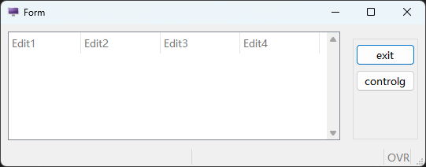
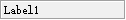

布局

布局有两种方式，垂直和水平，多个容器要放在一个布局中


容器

| 名称 | 功能说明 |
|---|---|
| Folder | 以切页方式的空白画布 |
| Grid | 简易空白画布 |
| ScrollGrid | 有卷轴的空白画布 |
| Table | 以表格方式显示阵列资料 |
| Tree | 以层次结构展示的阵列资料 |
- Folder
当摆放元件空间不足时（或是需要滚动画面，操作上较麻烦时），即可使用切页的功能，以资料夹的形式将资料性质相近的栏位，切分在同样的 page 当中。
制作时可在页签位置以鼠标右键新增、删除页面。
编译时若该页签内没有任何元件，则编译会失败，且系统会显示有空白页签存在。 页签上显示字符串仍需在属性视窗指定。
Genero Studio

画面预览

- Grid
可将此容器视为一块空白的画布，布置在上方的元件都可以显示在画面相对位置上。
Grid 只能处理非阵列资料。Grid 不可以被安排在其他 Grid 容器之内。
Genero Studio

画面预览

- ScrollGrid
在 Genero Studio 中，此容器与 Grid 相同，均作为处理非阵列资料用。与 Grid 容器的差异仅在可使用滚动轴，可以滚动画面。不能用于显示阵列资料。
Genero Studio

画面预览

- Table
使用 TABLE 即是以表格方式显示阵列资料，此方式有许多的优点，这些优点都是系统提供的，不需要额外再撰写程序码即可使用；
包含：动态排序、栏位隐藏、显示或移动等。 在设计时期改变 Table 高度时，会自动增减资料的行数。 在 Table 物件上按鼠标右键，在弹出式选单可以新增或移除栏位。
另外可以直接以鼠标拖曳改变栏位的顺序。
编写时须注意：
-
使用 TABLE 物件时，资料（Record）一定是横列，没有直垂直排列。
-
编写时须到各栏位的属性中进行形态、对应数据库等资料的设定或变更。
Genero Studio

画面预览

-
Tree
Tree 树状图预览时和 Table 是一样的，当有资料的资料，树状图是有层级结构的。
当节点展开时，可以展开上下级结构。
Genero Studio

画面预览

控件
- Label
定义显示值用的栏位，可区分为下列三类。
-
StaticLabel
静态文字标签，可设定宽度、 前景色等。


-
Text
StaticLabel 可以和 Text 相互转换。Text 字符数自动决定大小的基本静态文字标签。无法自行设定宽度。

-
FormFieldLabel
动态标签，代码可以控制值的显示


-
Edit
定义一个编辑栏位。属于 FormField 物件，可设定与资料栏位的关联。
  -
ButtonEdit
定义一个编辑栏位的元件，可透过右侧按钮以触发某一事件。通常用在串连与此栏位输入时有关的动作，例如查询合法可用资料等。
  -
ComboBox
定义一个可利用下拉功能选值的编辑栏位，若输入资料只有几种值可供选择时，建议采用 RadioGroup 方式来限缩使用者可输入的内容（参阅 RadioGroup）。属于 FormField 物件，可设定与资料栏位的关联。
 选项对话视窗:
可管理 ComboBox 的选项，也可以按字母顺序排列选项的 Text。

-
DateEdit
定义一个日期编辑，按右侧钮可带出 Client 端万年历选择视窗。日期显示格式由主机端 DBDATE 环境变量控制。
  -
CheckBox
当栏位选项只有两种选择时（如：是或否，0 或 1，100 或 200 等），就可以采用此种输入型态执行输入。
  -
HLine
水平分隔线
  -
TextEdit
定义可编辑多行的栏位，输入长度当超过画面预留长度时，会自动出现卷轴。
  -
Button定义一个按钮以触发某一 4GL 中已写定的 ON ACTION 段。
建议除了特别的 ACTION 有需要在 Layout 内布置按键外，一般作业可不必布置.
  -
RadioGroup定义一个可用选择方式输入资料的输入栏位，此种选择方式会将选项清单展示在画面上（ComboBox 不会展开显示，可参照 ComboBox 说明），故若需要采用此输入形态，要注意画面空间是否足够。
   -
Canvas  -
ProgressBar  -
TimeEdit  -
Image -
Slider  -
SpinEdit  -
WebComponent